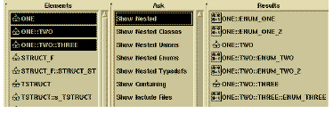

Notation
Information model querying supports the following nested entity types:
• class
• structure
• union
• enum
• typedef
These entities can be nested within a class, structure, or union.
Collectively, DIScover tools refer to these nested entities as nested structures. You can use the Browser in scan mode or the Minibrowser to find any nested structures in your source code.
In scan mode, the Ask column has six queries for nested structures. They are:
• Show Nested
• Show Nested Classes
• Show Nested Unions
• Show Nested Enums
• Show Nested Typedefs
• Show Containing
The Show Nested query is a generic query for any nested structures within a given entity or entities. The Show Containing query works in reverse. For a given nested structure, DIScover displays the entity that encloses it.
